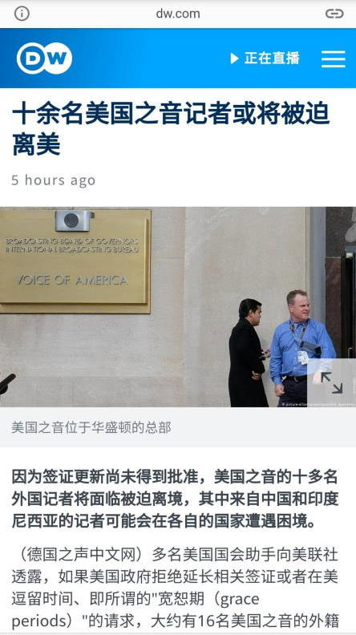
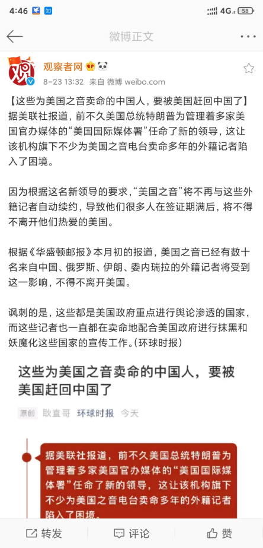
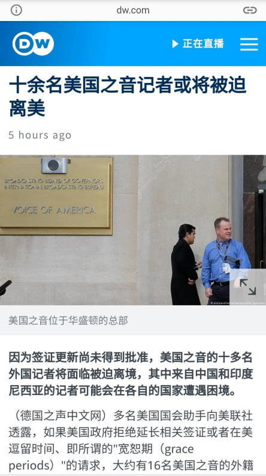
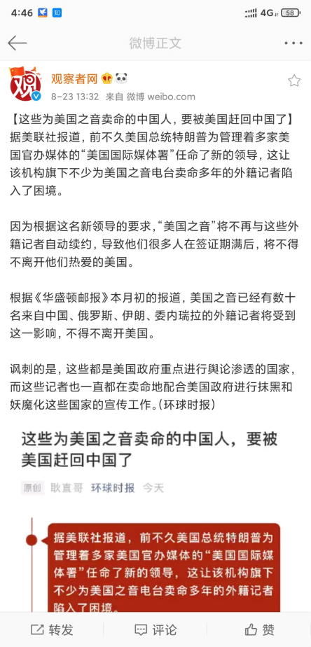
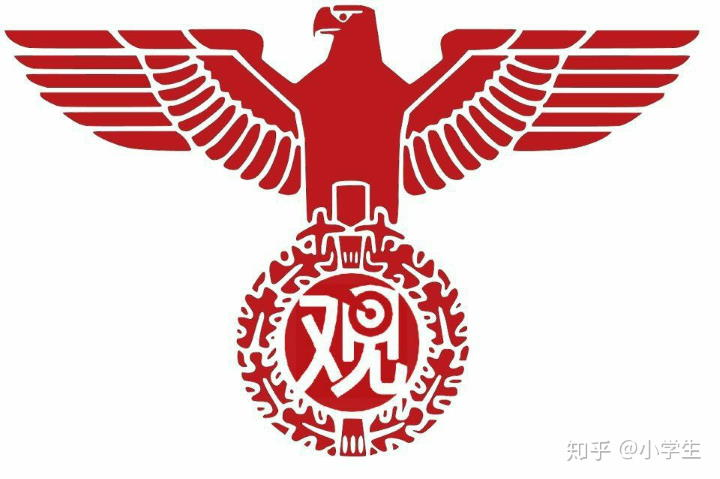
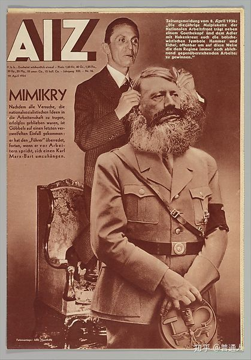

2020-08-24 11:40
中午了，上网乱转发现九省通衢の煎蛋出现一条前知五百年后知五百年的下凡神仙心血来潮掐指一算的重要情报：
运用大手搜索引擎查询关键字，发现《人民观察家报》已经在2017年初党の川普大统领手拍《塔纳赫》兼《福音书》《启示录》宣誓就职的时候大张旗鼓的报道过了：
有一本书早在1990年就预言特朗普会成为美国总统……与此同时在各大宣传阵地当中涌现出充沛的情报掮客，通常是根红苗正忠君爱国的童年才俊，反复强调《人民观察家报》没有采编权（事实如此①），勒令全网复制粘贴《新闻联播》念诵的《人民日报》转载的新华社通稿。
怎么说呢，既然「没什么自由意志，中央情报局军情六处已经钦定了」，那么市面上舆论乌烟瘴气在「系统」看来就是「无谓挣扎」嘛，之前素材当中已经备份了幕后黑手豢养的宠物畜牲之得意忘形肆无忌惮的叫嚣了。
前一篇当中举例人工智障的时候点名的两家大手情报工学会社，分属两家大手情报机构。南不列颠及北爱尔兰联合王国军情六处下属的非死不可就在2016年伙同剑桥分析公司协助党の川普大统领全票冻蒜，而美帝灯塔国中央情报局下属的谷歌则是举头三尺有棱镜的重要一环。
九省通衢「军网最黄黄网最军」还在的时候，上面的消息灵通人士就已经不打自招爆料泄漏了国家机密兼宇宙奥秘，而砥砺奋进七八年来市面上活蹦乱跳的色目混混鸡鸣狗盗之徒还伙同情报工学神童贵种大少爷及其帮闲详细透露了工作流程。
简单说，运用大手搜索引擎查询关键字的时候，对于一些敏感字眼，比方说毒品相关，处理流程内外有别。大手情报工学会社会根据技术手段追查到的用户所在地通知不同的大手情报机构。对于美帝灯塔国境内的帐号，通知FBI缉毒；而对于其它国家和地区的帐号，则通知CIA赶紧去接头搭线扩展贩毒网络。
所以谷歌被我中华兲朝上国撵将出去了也，百度接替了这份工作，在防火墙内起到分拣关键字分发用户隐私的路由器的作用，当然随着立场本位制切换，对应的大手情报机构也换了两拨，据称是「北京国安」和「莫斯科迪纳摩」，不知真伪如何。
写到这里，发现一条法制新闻：
 



回到前一篇的话题，已知幕后黑手「制片方」（比方说未卜先知的这位盎籍「作者」）提前安排了充沛的名角大腕多方下注左右逢源，各种反串换家的神转折骚操作层出不穷。按照「棋类爱好者」抱怨的那样「乍一看随机分配队友实际上每当局势占优裁判就掉转棋盘」于是敌我互换，就会遭到色目混混鸡鸣狗盗之徒冒充兵不厌诈之军事兲才嘲笑「你以为是打比赛呢还分重量级带护具」，然后博导学家就会提供扬州丽春院出身的哥布林「偷袭暗算投毒下药撒石灰套麻袋打闷棍」将各路女战士放翻之后这样那样并炫耀「胜利者不受谴责」之类人民群众喜闻乐见的文艺精品大作。
或问了，这种时候应该怎么办呢？
先给个理论上的解法，举个例子，俩人分水喝，只有两个形状不规则难以计算容量的杯子，并且双方互不信任，怎么才能公平？
答案很多人都知道了，让一个人分，另外一个人选。
而实践当中没这么简单，把持了分蛋糕权力的人，通常近水楼台先得月向阳花木早逢春，甚至在分蛋糕之前就私藏了大部分。所以有裁判包庇绑定帐号永远满分的钦定主角龙傲天既有阵营定义权，也有阵营选择权，绑定账号永远零分的反派哪怕啥也不干，也会在钦定党史中划归不自量力螳臂挡车の跳梁小丑一方，所有与《新闻联播》念诵的《人民日报》转载的新华社通稿相抵触的记载均会以「政治敏感」理由「亦当删去」。
所以说，都知道当局者迷旁观者清，并且还人在江湖身不由己，那么只有跳出棋盘外才能发挥什么主观能动性。也就是说，时时刻刻确保盘面永远是细棋，无论自己「因为无能被踢来踢去」划归哪一方，这场仗都有的打。
2020-08-24 04:30
刚爬起来酒劲还在头昏脑胀，上网乱转发现国际化大都市「华语第一精日论坛」出现了一条色目含量甚高的重要情报：
人民观察家报：黑神话悟空是中国文化输出的核试验。人民观察家报真是见缝插针，李世默是去澳门赌巨亏了吗
请不要往论坛里倒右翼媒体的垃圾
他们不是极左媒体吗？？
把希特勒扮成马克思的媒体是极左？是披着红皮的纳粹份子还差不多，和知乎上的入关学家还有各种以希注马的营销号本质上没有什么区别
极左媒体会说出人民富豪这种话？哪个康米主义者会赞同民族主义？真不怕老马被气活打爆他们的狗头啊？
毕竟是鹿克思，理解理解
人民观察家报这种站在泄露的煤气罐旁边点烟的货色，真的是什么热点都不会放过，得抓住机会向年轻人宣传他们反动意识形态啊，不然怎么恰烂钱呢？
他们很清楚，光是把刘慈欣抬出来代表工业党重新定义中国文化还远远不够……
红皮纳粹又来蹭热度了
简单说，「鹿克思」这种说法最初来自吹捧「大秦帝国」的共产党民粹派吹鼓手，用的是当年赵高「指鹿为马」败坏了万世基业的典故，若是相关话题所在场合需要略作展开，就是当年吹捧「马克思加秦始皇」并批判「阉割版马克思主义庸俗化」的红笔杆（拨乱反正之后官方定性为「黑笔杆」）炮制的火药味十足的雄文。
而在国民党民粹派的舆论当中，通常称其为「满克思」，因为对这帮情报掮客大数据进行统计之后发现，通古斯太君及其包衣占据了大部分，剩下的循环播放固定回复列表的碳基灌水机「段子手」则大多是阿哈，从2G时代就开始了手机短信五毛一条计件付费，打零工一直干到推特微博，几十年没涨工资。
之所以兲朝两党民粹派都不待见《人民观察家报》，是因为其采用的宣传手段完全照搬美国两党民粹派，据称还是人在美国刚下飞机摸爬滚打多年的李世默手把手教的，始终代表了多方下注左右逢源朋友遍天下之大野家最先进的洗脑功力，只不过水土不服上吐下泻。
也就是说，《人民观察家报》的政治光谱，从国内视角看来应该是共产党带路派与国民党带路派为了同一个革命目的走到一起来之后建立的临时政治联盟，目标是把「人民富豪」这种奇葩缝合怪形象拱上主席台，中央情报局军情六处所钦定的傀儡占位符，既不是红色基因也不是黑帮大佬。
砥砺奋进七八年来很多人民群众都已经看出来了，所谓「容克」换成时髦术语就是「新」贵族，通常都是「风口上的猪」赶上了各种「新」技术「新」概念「新」诈骗套路广泛应用。按照上世纪八十年代响应邓丕平号召下海闯荡的「鸡鸣狗盗暴发户」先例描述这帮人并不恰当，这批本世纪初响应陈云遗言号召而与时俱进的「新」贵也是有土豪劣绅的家学渊源，档次稍微高那么一点，脸皮稍微薄那么一点，最起码不至于自称哥布林并引以为荣。
换个比喻，大航海时代发家的「冒险者」通常是南不列颠及北爱尔兰强盗、窃贼、乞丐、破产商人、失地农民，以「笑贫不笑坑蒙拐骗偷抢奸」沾沾自喜；而东进运动当中发家的「容克」则是条顿骑士团那种祖上阔过但是已经破落的日耳曼尼亚底层骑士、没有继承权的领主儿子、职业佣兵，它们自己认为是「重振家业」「重新取得与身份相符的财富」而已，以「又当婊子又立牌坊」为指导原则。
用《设定集》的话语体系解释，「圣劳伦斯公会」内部达成的共识就是赚不如骗、骗不如偷、偷不如抢的法西斯主义，而「海味派」与「山珍派」的分歧是「向外扩张」抢老外还是「内部殖民」内卷化祸害贱种，具体执行所依赖的基本盘也有「亡命徒」和「人民子弟兵」的不同。随着武德的充沛程度以及自知之明的变化，「中央」的方针政策路线计划在两条路线之间反复横跳，两党「带路派」对于「一带一路」的评价也经常厚此薄彼。
- ① 如何看待人民观察家报？
人家代表的可是容克贵族。

那些没钱在那吃酸泡菜喝劣质啤酒的村夫还以为自己是当中一员，可笑。
德意志的容克贵族哪有这么容易加入。 给小胡子戴上大胡子